『誰』
「弾薬も推進剤も尽きたか…。この数、さすがに想定外だったな」
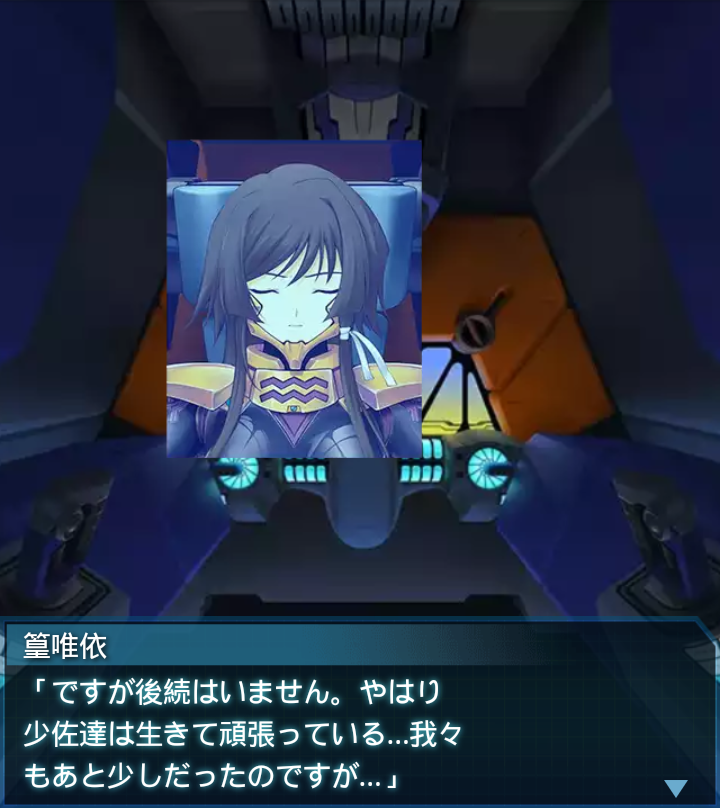
篁唯依
「ですが後続はいません。やはり少佐達は生きて頑張っている…我々
もあと少しだったのですが…」
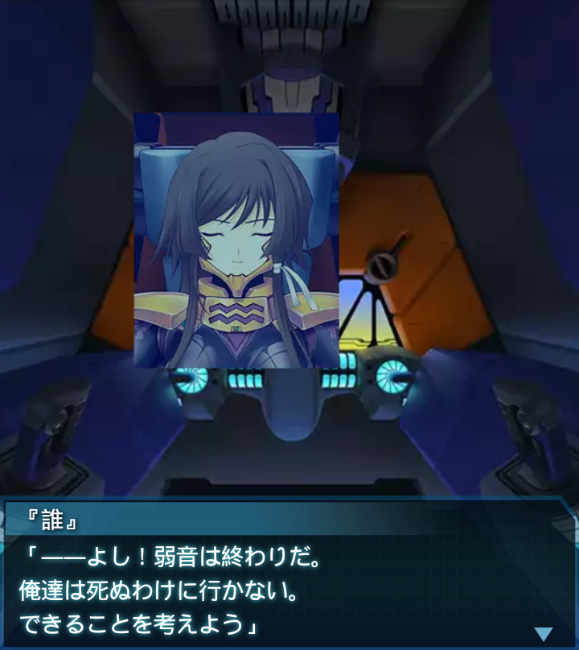
『誰』
「――よし！弱音は終わりだ。俺達は死ぬわけに行かない。
できることを考えよう」
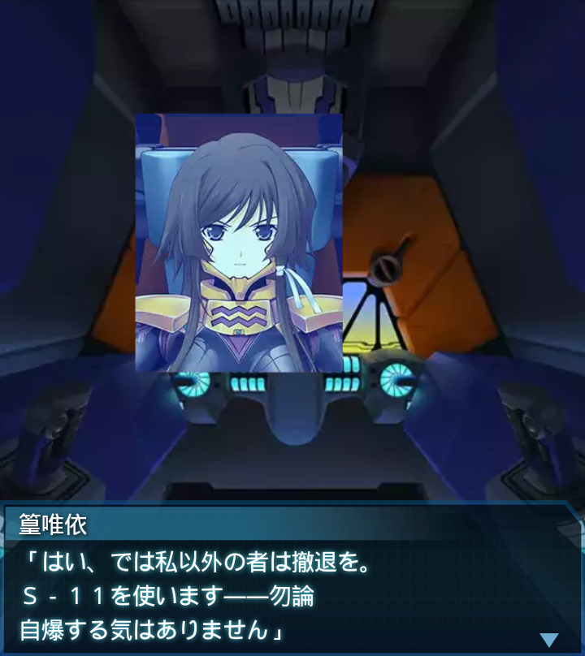
篁唯依
「はい、では私以外の者は撤退を。Ｓ－１１を使います――勿論
自爆する気はありません」
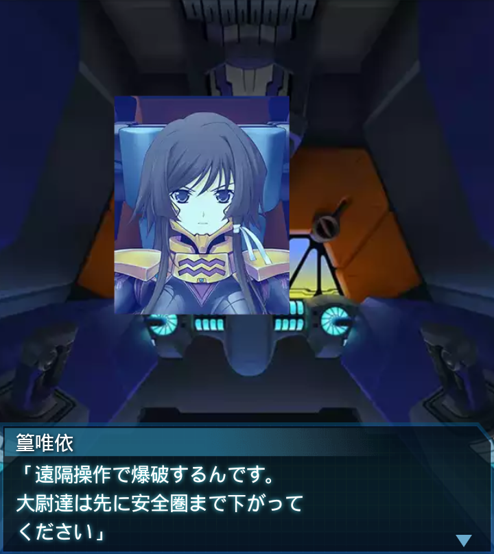
篁唯依
「遠隔操作で爆破するんです。大尉達は先に安全圏まで下がって
ください」
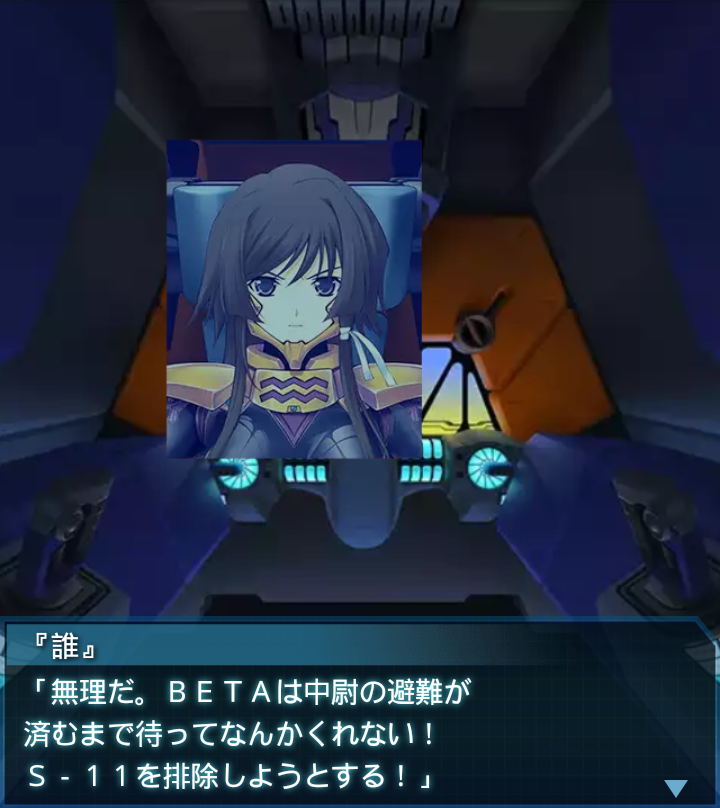
『誰』
「無理だ。ＢＥＴＡは中尉の避難が済むまで待ってなんかくれない！
Ｓ－１１を排除しようとする！」
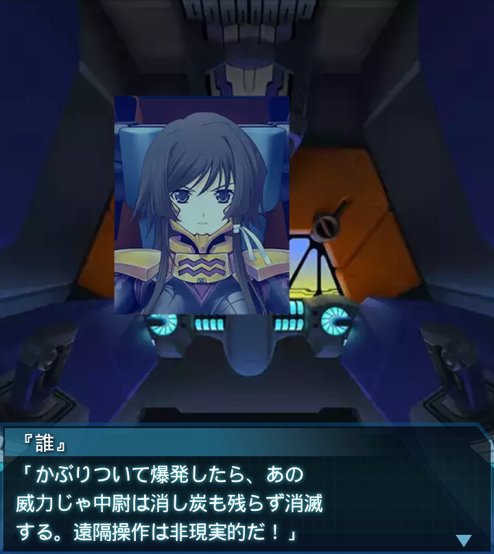
『誰』
「かぶりついて爆発したら、あの威力じゃ中尉は消し炭も残らず消滅
する。遠隔操作は非現実的だ！」

篁唯依
「ＢＥＴＡの死骸に埋めれば少しは――」
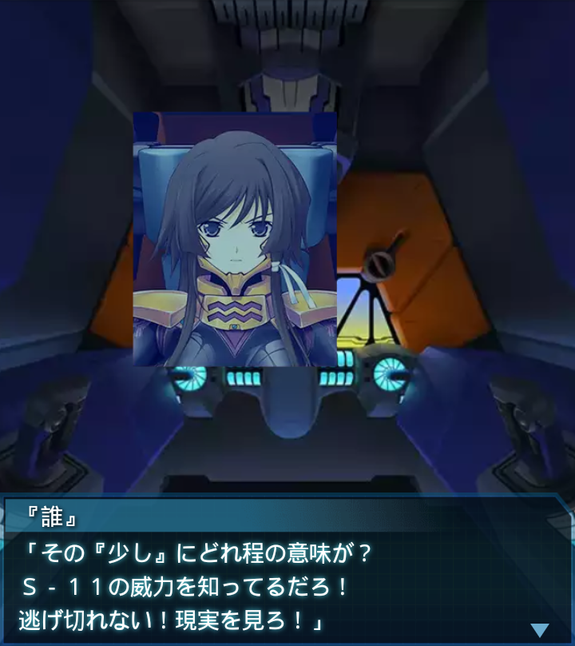
『誰』
「その『少し』にどれ程の意味が？Ｓ－１１の威力を知ってるだろ！
逃げ切れない！現実を見ろ！」
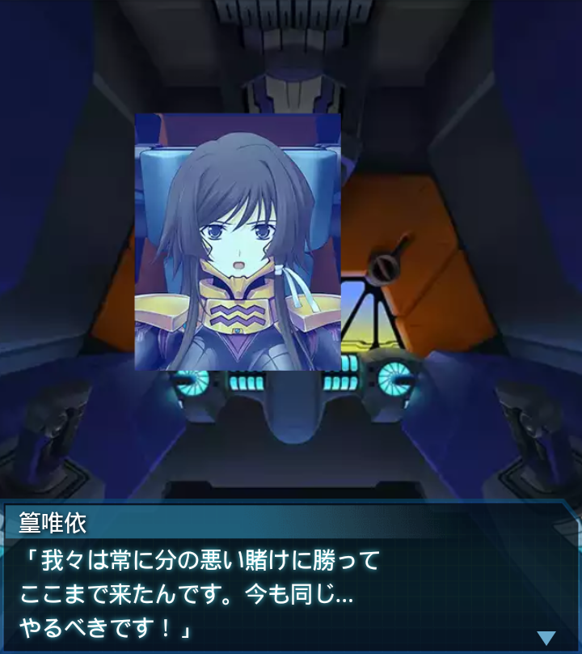
篁唯依
「我々は常に分の悪い賭けに勝ってここまで来たんです。今も同じ…
やるべきです！」
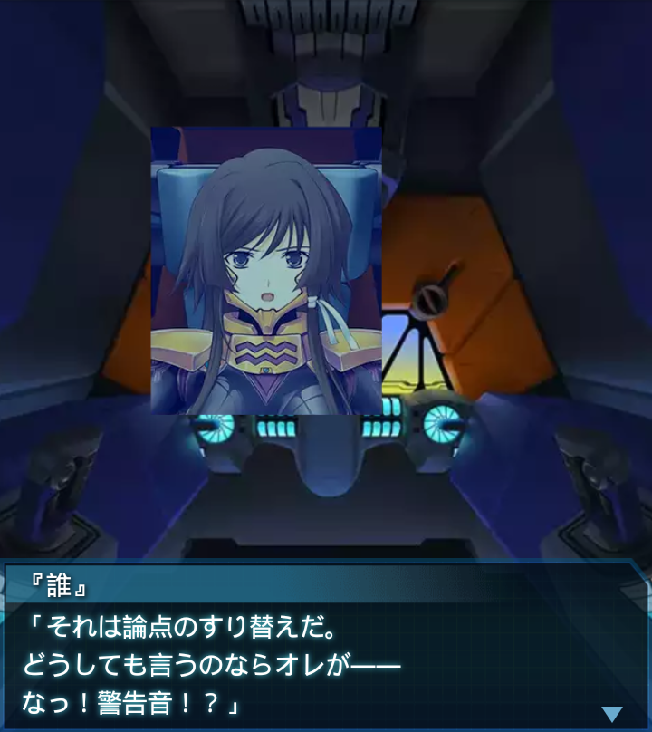
『誰』
「それは論点のすり替えだ。どうしても言うのならオレが――
なっ！警告音！？」
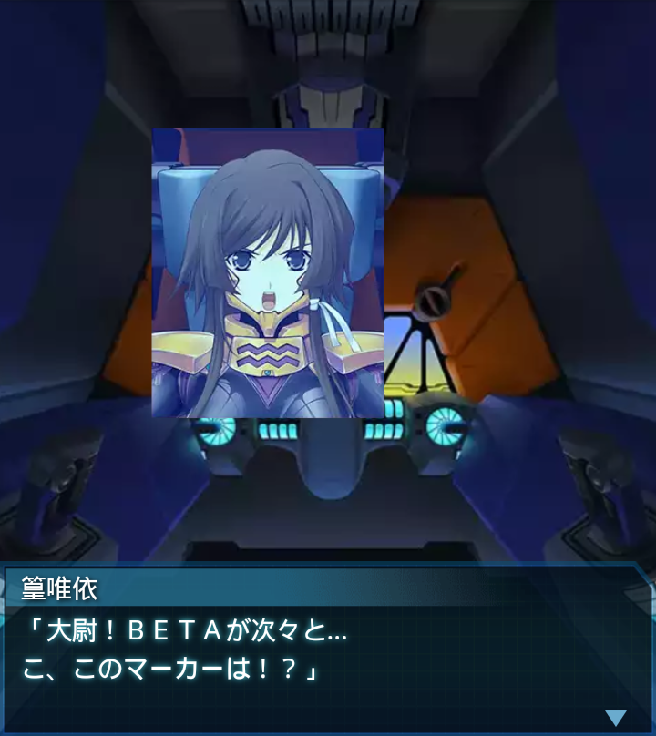
篁唯依
「大尉！ＢＥＴＡが次々と…こ、このマーカーは！？」
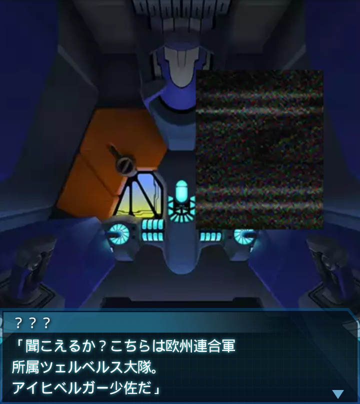
？？？
「聞こえるか？こちらは欧州連合軍所属ツェルベルス大隊。
アイヒベルガー少佐だ」
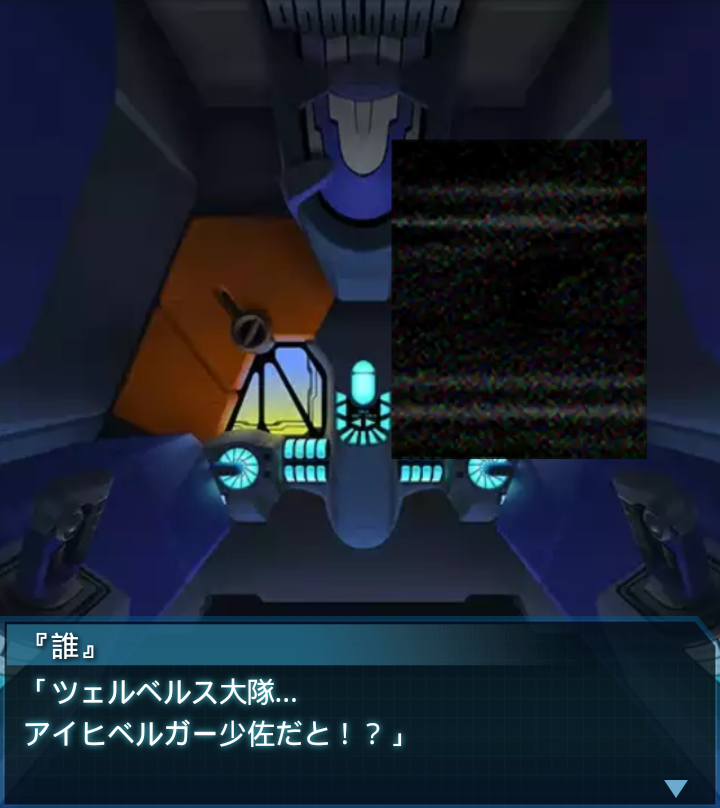
『誰』
「ツェルベルス大隊…アイヒベルガー少佐だと！？」
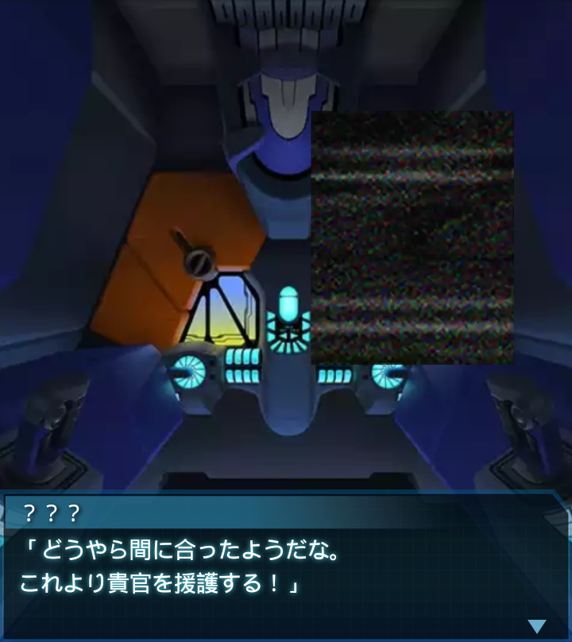
？？？
「どうやら間に合ったようだな。これより貴官を援護する！」